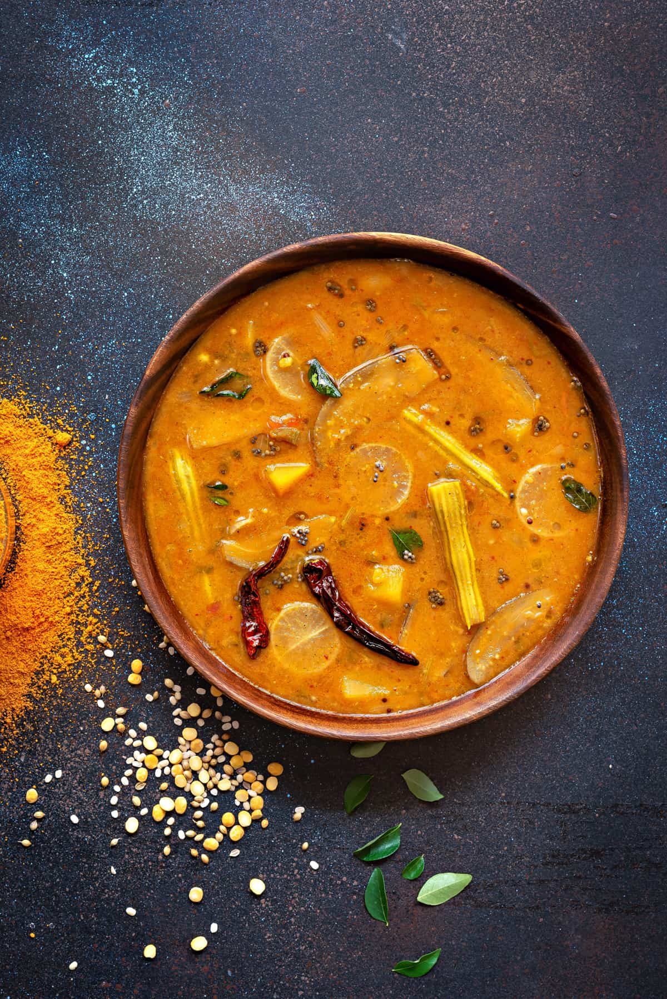

Dal Sambar
⭐⭐⭐⭐⭐ 4.9 Rating | ⏱ 30 Minutes | 🍽 2 Servings
Category
Lunch/Dinner
Difficulty
Medium
Calories
160 kcal
Cooking Style
Tempering
📋 Ingredients
- 1/2 cup Toor dal (Pigeon peas)
- 1/2 tsp Turmeric powder
- 1/2 tsp Ghee or oil
- 1.5 cups Mixed vegetables (carrots, tomatoes, drumsticks, pumpkin)
- 1.5 tbsp Tamarind extract
- 2 tbsp Sambar powder
- Salt to taste
- 1 tbsp Oil or Ghee
- 1 tsp Mustard seeds
- 1/4 tsp Fenugreek seeds (methi)
- 2 Dry red chillies
- 1 sprig Curry leaves
- Pinch of Hing (asafoetida)
- 2 tbsp Fresh coriander leaves (chopped)
🍳 Required Utensils
- Pressure cooker
- saucepot/kadai
- small tadka pan
- whisk/masher
- ladle
📖 Introduction
Dal Sambar is a classic South Indian comfort stew made by pressure-cooking split yellow lentils (toor dal) to a velvety texture, simmering them with tamarind-infused vegetables, and finishing with an aromatic spice tempering.
🔬 Principle
The core technique lies in completely disintegrating pressure-cooked lentils to create a thick, starch-rich emulsion. This lentil base absorbs the sourness of tamarind and the earthy warmth of sambar powder, while a crackling oil tempering blooms fat-soluble spice compounds at the end.
👨🍳 Procedure
- Cook and Mash Dal
- Rinse toor dal until water runs clear.
- Pressure cook with 1.5 cups water, turmeric, and 1/2 tsp ghee for 4–5 whistles until very soft.
- Whisk or mash thoroughly into a smooth paste.
- In a deep pot, combine chopped vegetables, tamarind extract, sambar powder, salt, and 2 cups water.
- Simmer on medium heat for 10 minutes until vegetables are tender.
- Pour the whisked dal into the vegetable pot.
- Adjust consistency with warm water. Simmer on low heat for 5 minutes to let the flavors meld together.
- Heat oil or ghee in a small pan. Add mustard seeds and let them pop.
- Add fenugreek seeds, red chillies, curry leaves, and hing.
- Pour immediately into the sambar, cover with a lid for 2 minutes, and top with coriander.
⚠ Precautions
- Toor dal may cause gas or bloating for sensitive digestive systems.
- Ensure hing is used in tempering to improve digestibility.
💡 Chef Tips
- Never skip whisking the cooked dal into a uniform paste—unmashed dal leads to water separating from the lentils in your bowl.
- If your tamarind extract is overly sour, add a small piece of jaggery (1/2 tsp) to round out the flavor profile.
- Add fenugreek seeds right as the mustard seeds stop spluttering to prevent them from burning and becoming bitter.
🥗 Nutrition Facts
| Nutrient | Amount |
|---|---|
| Calories | 160 kcal |
| Protein | 7 g |
| Carbohydrates | 25 g |
| Fat | 4 g |
| Fiber | 5 g |
🍽 Serving Suggestions
- Serve hot over steamed rice with a generous spoonful of ghee, paired with potato roast (Alu Fry) or papadums.
- Serves as an essential dipping gravy for idli, dosa, vada, and uttapam.
🌿 Health Benefits
- High in plant-based protein, dietary fiber, and essential minerals. Asafoetida (hing) and cumin aid digestion.
✅ Result
A velvety, medium-thick stew with a tangy, savory, and aromatic flavor profile, packed with tender mixed vegetables and crackling mustard seeds.
🎥 Watch Recipe Video
Learn the complete recipe by watching the step-by-step video.
▶ Watch on YouTube